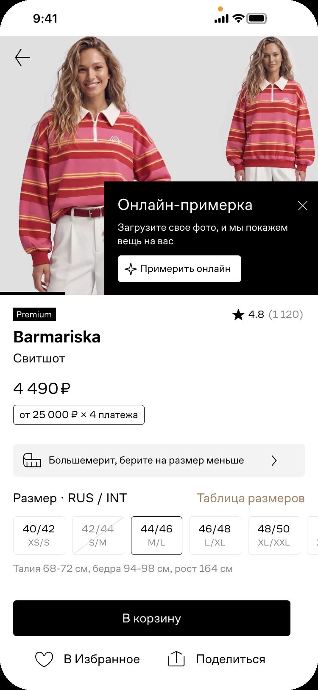
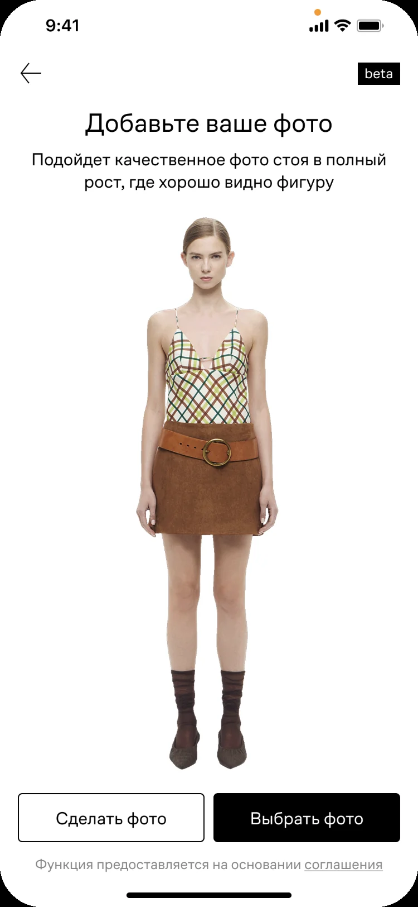
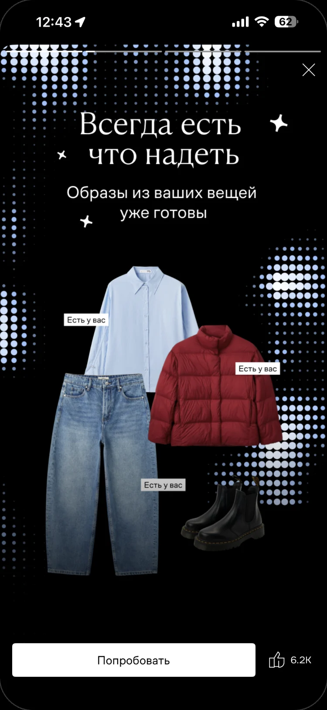
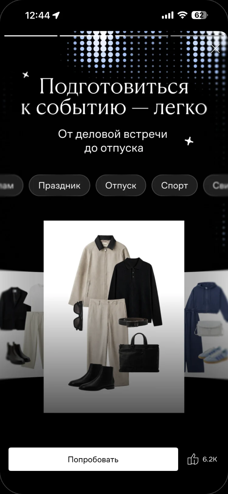
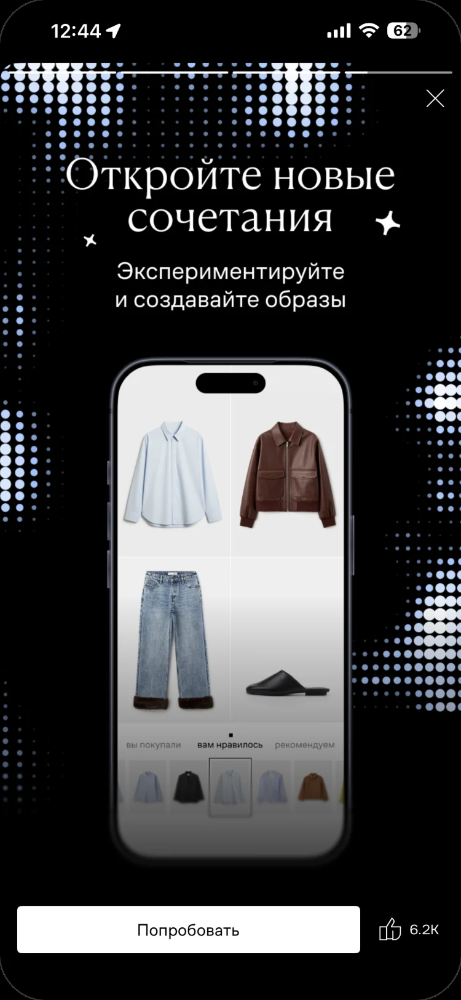
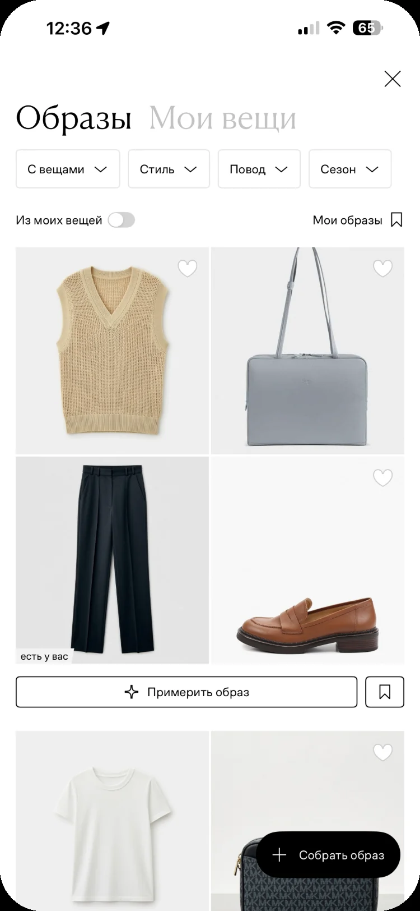
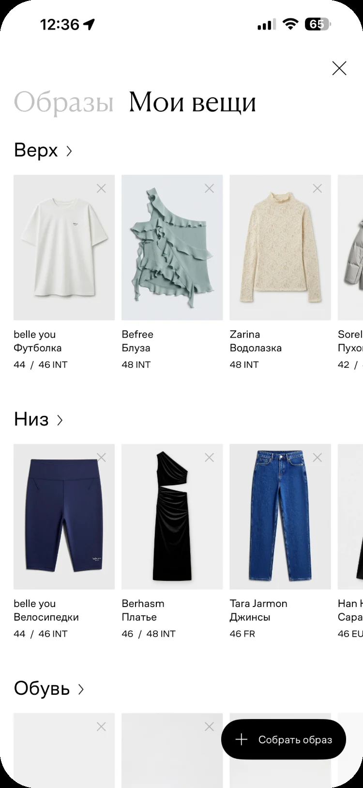
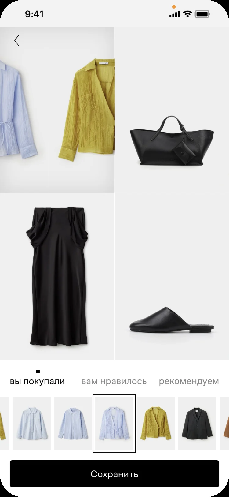

AI products
Virtual try-on
Products are often returned because they look or fit differently than customers expected. To reduce returns, Lamoda developed its own AI try-on technology. It allows users to see how an item will look on them before placing an order.
My role: Lead Product Designer. I led two stages of the project, from the initial idea to the rollout to 100% of users. I worked with the Product Lead, Product Director, Art Director, data analysts, developers, marketing team, and Motion Designer.
Stage 1. Trying on individual items
The first version of the feature supported tops and dresses. A designer under my supervision designed the entire try-on flow and onboarding. The onboarding was important to help users discover the new feature and start using it. AI try-on was an unfamiliar experience, and without an explanation, very few users would have found it.
Stage 2. Trying on a complete outfit
Next, we introduced the ability to try on a complete outfit instead of just one item. The flow was based on the solutions from the first stage. Users who had already tried individual items could follow a familiar journey without having to learn how to use the feature again.
Further development
The next step is to introduce virtual try-on based on users' body measurements to show how clothes fit more accurately.
Results
- 1M+ monthly active users and 400K SKUs (85% of the catalog)
- Increased user engagement by 40%
- Rolled out to 100% of users


Virtual wardrobe
Based on quantitative and qualitative research, we know that users want to look good in the clothes they buy. But there are several barriers that make this difficult:
1. It's not clear what to wear with a new item
The main concern when buying something is: “I'll buy it, but I won't have anything to wear it with.” The wardrobe helps users create outfits by combining a new item with clothes they already own.
2. Buying duplicates
Users can see when they already own something similar. This helps reduce impulse purchases that they might regret later.
3. It's hard to put outfits together every day
How can users get ready quickly and still look good?
4. No clear overview of the wardrobe
Users can see which items are missing, which colors and styles they wear most, and what they haven't worn for a long time.
For the business, the key benefits are:
1. Engagement and retention
Users have a reason to open the app beyond shopping.
2. Fewer returns
Users can understand in advance whether an item will fit into their existing wardrobe.
3. Higher average order value and cross-selling
Recommendations like “These jeans would look great with...” are based on the actual items users own.
Lamoda has something that standalone wardrobe apps don't: users' purchase history and automatic outfit creation. This became the foundation of our solution.
Research gave us two key insights:
• Digitizing clothes is a barrier. Adding an entire wardrobe manually takes a lot of time, and most users give up at this stage. We fill the wardrobe automatically using purchase history.
• Visual appeal matters. Users want to enjoy looking at their wardrobe, not just scroll through a list of products. This made visual presentation an important part of the design.
What was done:
1. Analyzed wardrobe apps in Russia and other countries
2. Identified the key value for users and built the product flows around it
3. Designed easy-to-use navigation that could support future growth
4. Presented the wardrobe concept to the Product Director
5. Broke the concept down into clear stages for implementation
Results
- The wardrobe was rolled out to 100% of users.
- Wardrobe views and user retention grew month over month. Users who use the wardrobe also show an increase in average order value.





